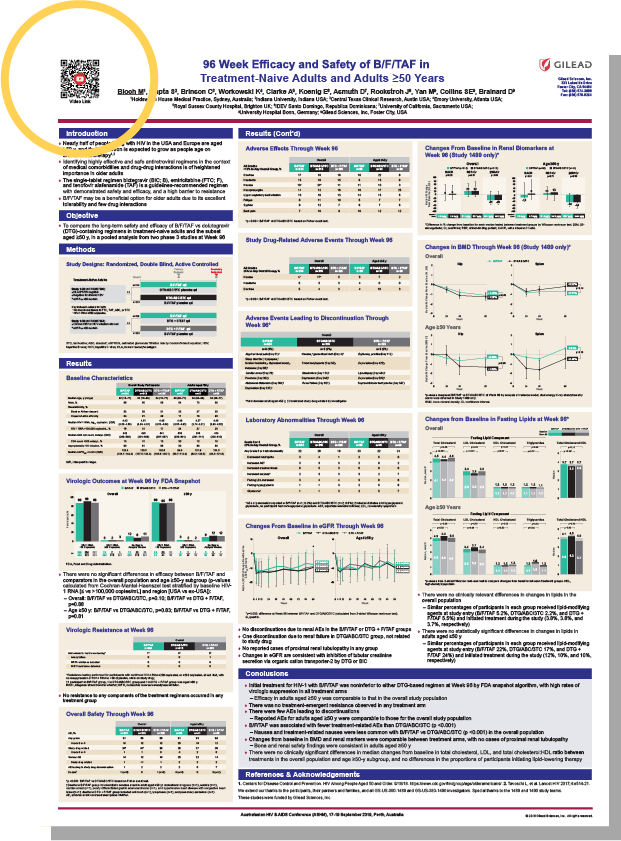
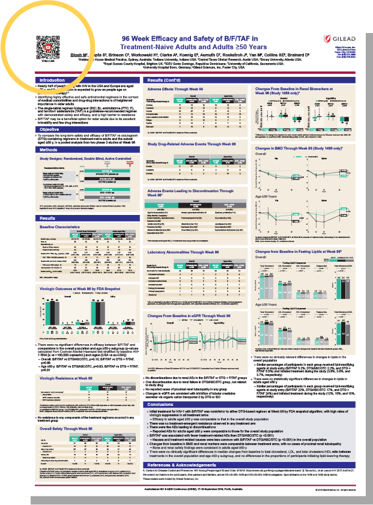

QR Castle

Welcome!
Use this QR Code to access a video welcoming you to the Zone
- Open the camera on your phone or mobile device
- Point it at the QR code to scan
- Press and hold the home button
- Tap on the notification banner to open the link associated with the QR code
“Using QR video links on conference posters is an effective way of communicating the science, and video may be a preferable form of media for many conference attendees. It’s key to continuously improve the way we communicate data externally since it ultimately impacts patient care. Having QR video links on Gilead conference posters would be great as standard practice; especially recently with virtual conferences where there is no person-to-person interaction at the poster.”
-Julie Ryu
Director, Medical Affairs Research
What Is A QR Code?
A QR code or "Quick Response" code is a type of barcode that contains a matrix of dots that can be scanned by your smartphone camera to open a webpage, send an email, access additional data or deliver an augmented reality experience.
QR Codes @ Gilead
QR Codes have a variety of applications, and one of the hottest right now at Gilead is to enhance and extend the content and reach of your conference poster.
By giving conference attendees an easy way to access a video, article, or podcast from the author or some other resource, your poster starts to feel like an interactive experience that appeals to different learning modalities. It’s a convenient and cool way to get the key information during or after the conference.
Hear how Damien Fagan, Associate Director Medical Affairs, HIV in Melbourne and his colleagues used QR codes to substantially increase the number of people who benefitted from their poster presentations.
Use the QR code on the posters to access additional content!
 



Ready To Use QR Codes On Your Posters?
Here’s What to Do

- Create the video or other content people will access through the QR code
- Upload the video and poster content to One Drive
- Share the video and poster content from One Drive to MAO.Graphics@gilead.com
- The graphics team will create the poster, compress the poster and add the QR code
Advice From QR Code Pros
Damien Fagan
Associate DirectorMedical Affairs, HIV

- Start planning and outreach as early as possible since there are a lot of people across different functions to potentially involve.
- Leverage your network of global colleagues and relationships to reach out to the primary author, especially if they are external.
- Give clear guidance on your objective, timelines and expectations from the beginning. Keep in mind that many clinicians may not prioritize this endeavor, so you may need to be persistent and send a few reminder emails.
- Provide some local context for why you believe this research is beneficial to your key opinion leaders (KOLs) – this helps the author tailor the communication to your audience.
- Think outside the box. For example, we are looking at other ways to bring data to life, including augmented reality – watch this space for that!
Mike Tran
Senior Manager,Graphics Services
- Consider people’s time and attention span at conferences and keep the video to 2 minutes or less.
- If shooting the video yourself with an iPhone, use a tripod for stability, good lighting and a quiet environment.
- Be creative! People appreciate the extra effort, and you’ll have more people watching the entire video.